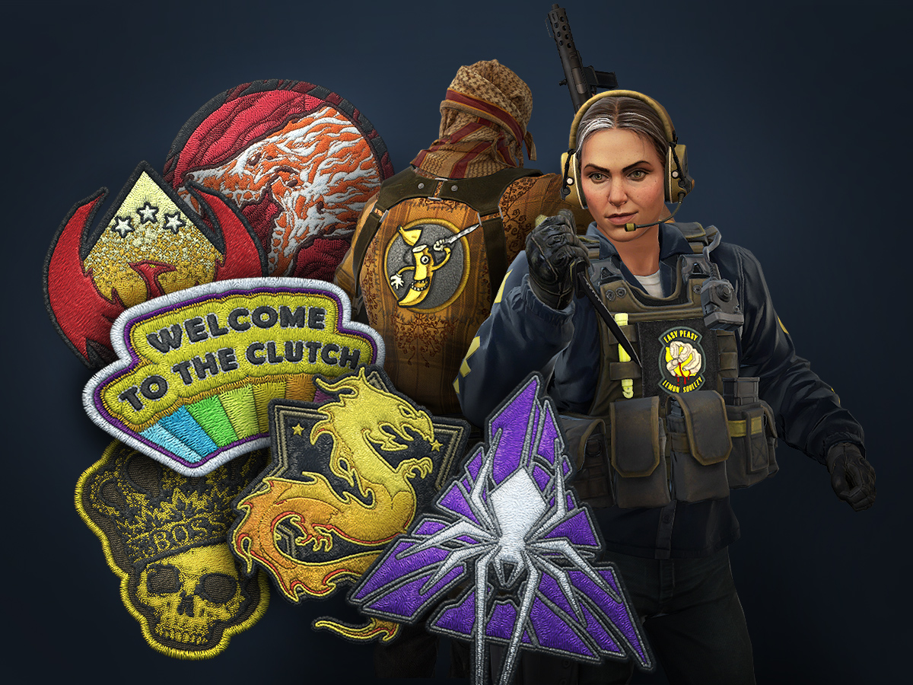

We’re in the final weeks of Operation Shattered Web, and players have until March 30th to play missions, earn progress, and redeem Operation rewards.
Today the final mission card goes live which means we’ll start issuing Diamond Operation Coins to users who have completed 100 missions. This week’s card, “Time To Take Out The Trash”, includes a second co-op Strike mission tasking players with finding and eliminating Franz Kriegeld. Don’t let him escape!
Today’s update includes a revamped buy menu, a simple way to customize (and share) your crosshair, and an all new way to personalize your favorite agents!
Looking for a way to personalize your agent? Patches featuring a variety of classic designs can now be applied to specific locations on each character model, and you can apply more than one for each agent. You can find patches in the CS:GO Patch Pack, available now.
Customizing your crosshair has never been easier. Head over to the settings menu, where you’ll find a variety of crosshair settings that can be tuned to your personal taste. You can share your crosshair code with others or import a code to try someone else’s.
Today’s update also includes a visual rework of the buy menu, featuring an interactive preview of your character holding weapons and equipment. Along with some slight rearranging, now you can preview the equipment you can afford with illuminated icons in the buy wheel.
We take feedback about communication abuse seriously, and in the past we’ve shipped settings that let customers control their exposure to other players’ avatars, names, and voice/text chat. (You can find these in Settings->Game->Communication and on the scoreboard). The settings are useful, but they have the downside of squelching communication indiscriminately.
So we’ve been working on a new system that will work more precisely. When the new system is fully deployed, players will receive a warning if they receive significantly more abuse reports than other players.
If they ignore that feedback and continue to receive abuse reports, they’ll receive a penalty: they will be muted by all other players by default. This ‘default mute’ state will remain until the player earns enough XP to remove the penalty, but other players can choose to manually unmute the user (as they would any other muted player).
Because the new system is driven by reports, it lets players establish their own standards for communication and ensure that their fellow players receive anonymous feedback when they’re out of line.
We’ve already started tracking players’ reports with the new system, and you can help us by getting into the habit of reporting abusive players for ‘Abusive Communications or Profile’ when you come across them. Note that reports are weighted higher for players that play more and/or report less frequently, so accounts that generate no XP and/or spam reports will have little to no impact.
Friday, March 13, 2020 18:00
Wed, March 18, 2020 18:00
Friday, March 20, 2020 18:00
Counter-Strike: Global Offensive (CS: GO) expands upon the team-based action gameplay that it pioneered when it was launched 19 years ago.
CS: GO features new maps, characters, weapons, and game modes, and delivers updated versions of the classic CS content (de_dust2, etc.).
"Counter-Strike took the gaming industry by surprise when the unlikely MOD became the most played online PC action game in the world almost immediately after its release in August 1999," said Doug Lombardi at Valve. "For the past 12 years, it has continued to be one of the most-played games in the world, headline competitive gaming tournaments and selling over 25 million units worldwide across the franchise. CS: GO promises to expand on CS' award-winning gameplay and deliver it to gamers on the PC as well as the next gen consoles and the Mac."
© 2020 Valve Corporation. All rights reserved. All trademarks are property of their respective owners in the US and other countries